library(tidyverse)
library(sf)
aec_map <- read_sf(here::here("data/vic-july-2021-esri/E_VIC21_region.shp"))
votes <- read_csv("https://results.aec.gov.au/27966/Website/Downloads/HouseDopByDivisionDownload-27966.csv", skip = 1)
electoral_winners = votes |>
mutate(DivisionNm = toupper(DivisionNm)) |>
filter(Elected == "Y") |>
select(PartyAb, DivisionID, DivisionNm, Elected) |>
distinct()
aec_map = aec_map |>
mutate(Elect_div = toupper(Elect_div))
winners_with_map = electoral_winners |>
left_join(aec_map, by = c("DivisionNm" = "Elect_div"))
aus_colours <- c(
"ALP" = "#DE3533", "LNP" = "#ADD8E6", "KAP" = "#8B0000", "GVIC" = "#10C25B", "XEN" = "#ff6300",
"LP" = "#0047AB", "NP" = "#0a9cca", "IND" = "#000000"
)
winners_plot <- ggplot(winners_with_map) +
geom_sf(aes(fill = PartyAb, geometry = geometry)) +
scale_fill_manual(values = aus_colours)Combining Australian census and election data
ETC5512
Combining Australian census and election data
Lecturer: Kate Saunders
Department of Econometrics and Business Statistics
- ETC5512.Clayton-x@monash.edu
- Wild Caught Data
- wcd.numbat.space
Today’s Lecture
What we’ll cover
Today you will:
- look at the ABS geographical boundaries for the 2021 census
- integrate data from different sources (census and election) to make exploratory inferences
. . .
From a coding perspective:
- Further expand our understanding of how to read and use spatial data in R
- Better understand how spatial data is organised
- Learn how to intersect two spatial objections
- Practice re-projecting maps
Recap
Recall Lecture 5: 2021 Federal Election Data
Recall Lecture 5: 2021 Federal Election Data
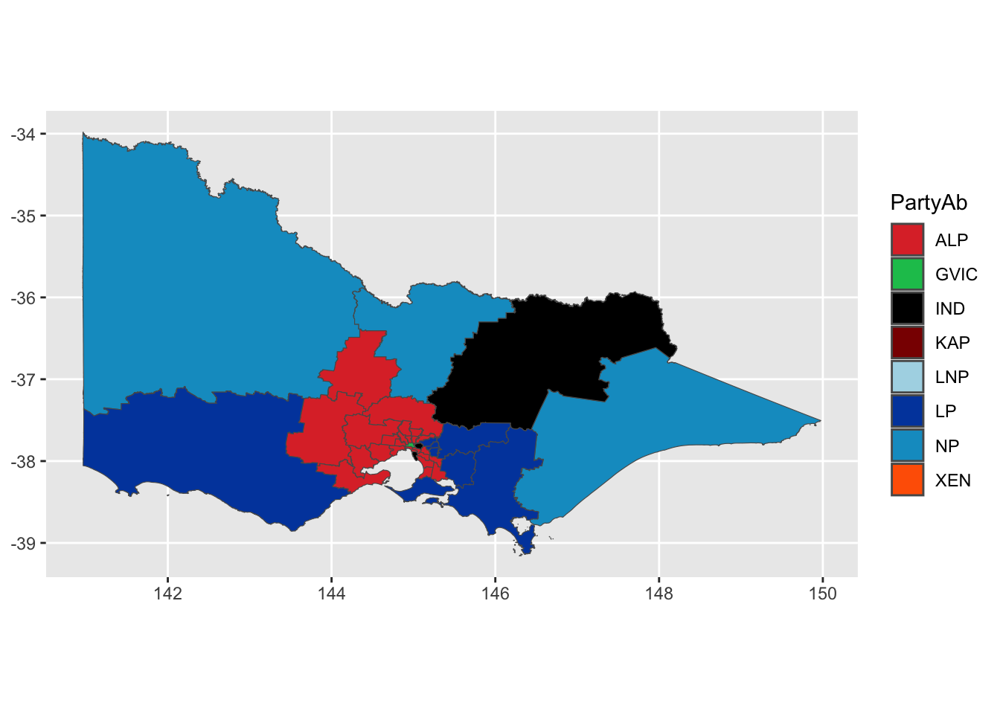
There are two sources of data:
- Electoral boundary
- The votes for candidates in each electorate
Recall Lecture 6: 2021 ABS Census Data
There are two main types of data that you can download.
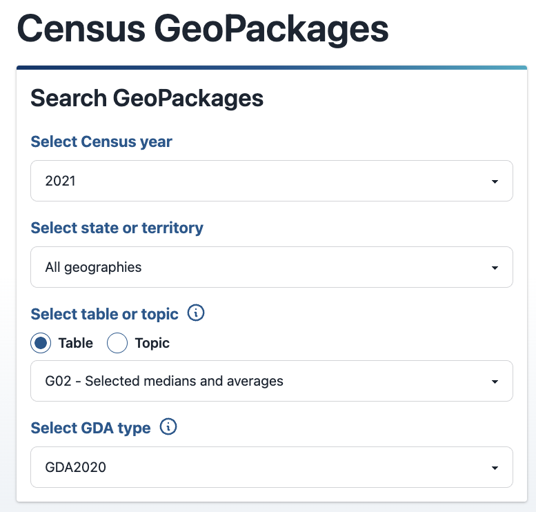
ABS Census 2021: GeoPackages
GeoPackage
A GeoPackage (GPKG) is an open, non-proprietary, platform-independent and standards-based data format for geographic information system implemented as a SQLite database container. Defined by the Open Geospatial Consortium (OGC) with the backing of the US military and published in 2014, GeoPackage has seen widespread support from various government, commercial, and open source organizations. https://en.wikipedia.org/wiki/GeoPackage
Recall: OGC also defines the WKT (basically how the maps is drawn.)
ABS GeoPackage (2021)
Download the data
https://datapacks.censusdata.abs.gov.au/geopackages/
- 2021
- Victoria
- Topic: Employment and Income or Table: G02
- GDA2020
. . .
You may also like to check out the strayr R package!
ABS GeoPackage (2021)
geopath_2021_G02 <- here::here("data/Geopackage_2021_G02_VIC_GDA2020/G02_VIC_GDA2020.gpkg")
st_layers(geopath_2021_G02)Driver: GPKG
Available layers:
layer_name geometry_type features fields crs_name
1 G02_UCL_2021_VIC Multi Polygon 347 11 GDA2020
2 G02_SUA_2021_VIC Multi Polygon 22 11 GDA2020
3 G02_STE_2021_VIC Multi Polygon 1 11 GDA2020
4 G02_SOSR_2021_VIC Multi Polygon 12 11 GDA2020
5 G02_SOS_2021_VIC Multi Polygon 6 11 GDA2020
6 G02_SED_2021_VIC Multi Polygon 90 11 GDA2020
7 G02_SAL_2021_VIC Multi Polygon 2946 11 GDA2020
8 G02_SA4_2021_VIC Multi Polygon 19 11 GDA2020
9 G02_SA3_2021_VIC Multi Polygon 68 11 GDA2020
10 G02_SA2_2021_VIC Multi Polygon 524 11 GDA2020
11 G02_SA1_2021_VIC Multi Polygon 15482 11 GDA2020
12 G02_POA_2021_VIC Multi Polygon 694 11 GDA2020
13 G02_LGA_2021_VIC Multi Polygon 82 11 GDA2020
14 G02_GCCSA_2021_VIC Multi Polygon 4 11 GDA2020
15 G02_CED_2021_VIC Multi Polygon 41 11 GDA2020
16 G02_RA_2021_VIC Multi Polygon 6 11 GDA2020ABS GeoPackage (2016)
Download the data (Notice it is stored differently)
https://datapacks.censusdata.abs.gov.au/geopackages/
- 2016
- Victoria
- Employment, Income and Unpaid Work (EIUW)
- EIUW GeoPackage A
ABS GeoPackage (2016)
geopath_2016_eiuwa <- here::here("data/Geopackage_2016_EIUWA_for_VIC/census2016_eiuwa_vic_short.gpkg")
st_layers(geopath_2016_eiuwa)Driver: GPKG
Available layers:
layer_name geometry_type features fields crs_name
1 census2016_eiuwa_vic_ced_short 39 489 GDA94
2 census2016_eiuwa_vic_gccsa_short 4 489 GDA94
3 census2016_eiuwa_vic_lga_short 82 489 GDA94
4 census2016_eiuwa_vic_poa_short 698 489 GDA94
5 census2016_eiuwa_vic_ra_short 6 489 GDA94
6 census2016_eiuwa_vic_sa1_short 14073 489 GDA94
7 census2016_eiuwa_vic_sa2_short 464 489 GDA94
8 census2016_eiuwa_vic_sa3_short 68 489 GDA94
9 census2016_eiuwa_vic_sa4_short 19 489 GDA94
10 census2016_eiuwa_vic_sed_short 90 489 GDA94
11 census2016_eiuwa_vic_sos_short 6 489 GDA94
12 census2016_eiuwa_vic_sosr_short 12 489 GDA94
13 census2016_eiuwa_vic_ssc_short 2931 489 GDA94
14 census2016_eiuwa_vic_ste_short 1 489 GDA94
15 census2016_eiuwa_vic_sua_short 22 489 GDA94
16 census2016_eiuwa_vic_ucl_short 353 489 GDA94The Australian Statistical Geography Standard (ASGS)
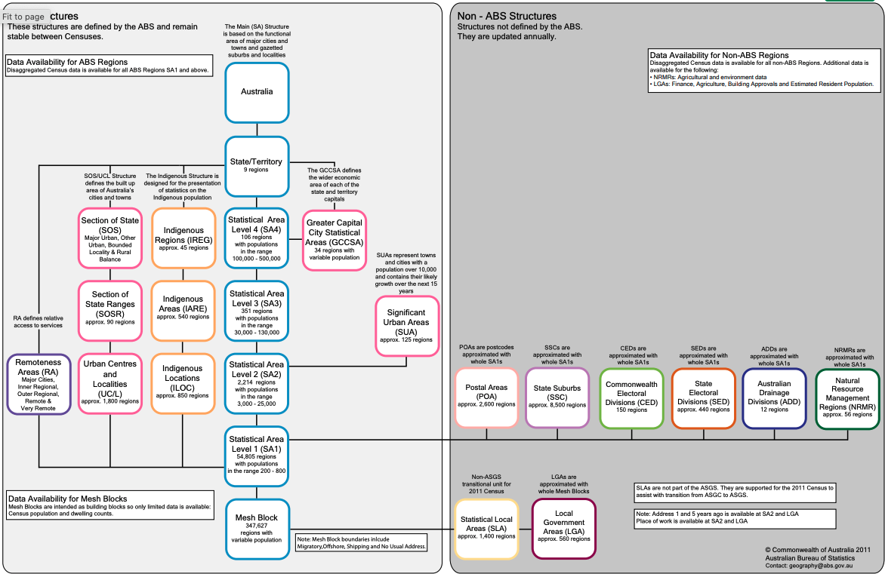
The number of regions for each layer
# A tibble: 16 × 6
name geomtype driver features fields crs
<chr> <list> <chr> <dbl> <dbl> <list>
1 G02_STE_2021_VIC <chr [1]> GPKG 1 11 <crs>
2 G02_GCCSA_2021_VIC <chr [1]> GPKG 4 11 <crs>
3 G02_SOS_2021_VIC <chr [1]> GPKG 6 11 <crs>
4 G02_RA_2021_VIC <chr [1]> GPKG 6 11 <crs>
5 G02_SOSR_2021_VIC <chr [1]> GPKG 12 11 <crs>
6 G02_SA4_2021_VIC <chr [1]> GPKG 19 11 <crs>
7 G02_SUA_2021_VIC <chr [1]> GPKG 22 11 <crs>
8 G02_CED_2021_VIC <chr [1]> GPKG 41 11 <crs>
9 G02_SA3_2021_VIC <chr [1]> GPKG 68 11 <crs>
10 G02_LGA_2021_VIC <chr [1]> GPKG 82 11 <crs>
11 G02_SED_2021_VIC <chr [1]> GPKG 90 11 <crs>
12 G02_UCL_2021_VIC <chr [1]> GPKG 347 11 <crs>
13 G02_SA2_2021_VIC <chr [1]> GPKG 524 11 <crs>
14 G02_POA_2021_VIC <chr [1]> GPKG 694 11 <crs>
15 G02_SAL_2021_VIC <chr [1]> GPKG 2946 11 <crs>
16 G02_SA1_2021_VIC <chr [1]> GPKG 15482 11 <crs> What is in a layer?
Geometry set for 1 feature
Geometry type: MULTIPOLYGON
Dimension: XY
Bounding box: xmin: 140.9619 ymin: -39.15918 xmax: 149.9762 ymax: -33.98064
Geodetic CRS: GDA2020sf [1 × 12] (S3: sf/tbl_df/tbl/data.frame)
$ STE_CODE_2021 : chr "2"
$ STE_NAME_2021 : chr "Victoria"
$ Median_age_persons : num 38
$ Median_mortgage_repay_monthly: num 1859
$ Median_tot_prsnl_inc_weekly : num 803
$ Median_rent_weekly : num 370
$ Median_tot_fam_inc_weekly : num 2136
$ Average_num_psns_per_bedroom : num 0.8
$ Median_tot_hhd_inc_weekly : num 1759
$ Average_household_size : num 2.5
$ AREA_ALBERS_SQKM : num 227496
$ geom :sfc_MULTIPOLYGON of length 1; first list element: List of 157
..$ :List of 1
.. ..$ : num [1:39, 1:2] 146 146 146 146 146 ...
..$ :List of 1
.. ..$ : num [1:25, 1:2] 146 146 146 146 146 ...
..$ :List of 1
.. ..$ : num [1:17, 1:2] 146 146 146 146 146 ...
..$ :List of 1
.. ..$ : num [1:112, 1:2] 146 146 146 146 146 ...
..$ :List of 1
.. ..$ : num [1:151, 1:2] 146 146 146 146 146 ...
..$ :List of 1
.. ..$ : num [1:18, 1:2] 146 146 146 146 146 ...
..$ :List of 1
.. ..$ : num [1:859, 1:2] 150 150 150 150 150 ...
..$ :List of 1
.. ..$ : num [1:64, 1:2] 150 150 150 150 150 ...
..$ :List of 1
.. ..$ : num [1:18, 1:2] 145 145 145 145 145 ...
..$ :List of 1
.. ..$ : num [1:1149, 1:2] 145 145 145 145 145 ...
..$ :List of 1
.. ..$ : num [1:76, 1:2] 145 145 145 145 145 ...
..$ :List of 1
.. ..$ : num [1:114, 1:2] 145 145 145 145 145 ...
..$ :List of 1
.. ..$ : num [1:34, 1:2] 145 145 145 145 145 ...
..$ :List of 1
.. ..$ : num [1:12, 1:2] 145 145 145 145 145 ...
..$ :List of 1
.. ..$ : num [1:10, 1:2] 145 145 145 145 145 ...
..$ :List of 1
.. ..$ : num [1:7, 1:2] 145 145 145 145 145 ...
..$ :List of 1
.. ..$ : num [1:1501, 1:2] 145 145 145 145 145 ...
..$ :List of 1
.. ..$ : num [1:281, 1:2] 142 142 142 142 142 ...
..$ :List of 1
.. ..$ : num [1:29, 1:2] 145 145 145 145 145 ...
..$ :List of 1
.. ..$ : num [1:16, 1:2] 145 145 145 145 145 ...
..$ :List of 1
.. ..$ : num [1:8, 1:2] 145 145 145 145 145 ...
..$ :List of 1
.. ..$ : num [1:18, 1:2] 145 145 145 145 145 ...
..$ :List of 1
.. ..$ : num [1:12, 1:2] 145 145 145 145 145 ...
..$ :List of 1
.. ..$ : num [1:12, 1:2] 145 145 145 145 145 ...
..$ :List of 1
.. ..$ : num [1:10, 1:2] 145 145 145 145 145 ...
..$ :List of 1
.. ..$ : num [1:7, 1:2] 145 145 145 145 145 ...
..$ :List of 1
.. ..$ : num [1:152979, 1:2] 145 145 145 145 145 ...
..$ :List of 1
.. ..$ : num [1:4281, 1:2] 145 145 145 145 145 ...
..$ :List of 1
.. ..$ : num [1:7592, 1:2] 147 147 147 147 147 ...
..$ :List of 1
.. ..$ : num [1:2378, 1:2] 147 147 147 147 147 ...
..$ :List of 1
.. ..$ : num [1:3789, 1:2] 147 147 147 147 147 ...
..$ :List of 1
.. ..$ : num [1:1718, 1:2] 146 146 146 146 146 ...
..$ :List of 1
.. ..$ : num [1:2093, 1:2] 147 147 147 147 147 ...
..$ :List of 1
.. ..$ : num [1:2021, 1:2] 147 147 147 147 147 ...
..$ :List of 1
.. ..$ : num [1:1138, 1:2] 147 147 147 147 147 ...
..$ :List of 1
.. ..$ : num [1:796, 1:2] 147 147 147 147 147 ...
..$ :List of 1
.. ..$ : num [1:348, 1:2] 146 146 146 146 146 ...
..$ :List of 1
.. ..$ : num [1:896, 1:2] 147 147 147 147 147 ...
..$ :List of 1
.. ..$ : num [1:1095, 1:2] 147 147 147 147 147 ...
..$ :List of 1
.. ..$ : num [1:699, 1:2] 147 147 147 147 147 ...
..$ :List of 1
.. ..$ : num [1:1431, 1:2] 147 147 147 147 147 ...
..$ :List of 1
.. ..$ : num [1:549, 1:2] 147 147 147 147 147 ...
..$ :List of 1
.. ..$ : num [1:252, 1:2] 146 146 146 146 146 ...
..$ :List of 1
.. ..$ : num [1:334, 1:2] 145 145 145 145 145 ...
..$ :List of 1
.. ..$ : num [1:219, 1:2] 146 146 146 146 146 ...
..$ :List of 1
.. ..$ : num [1:469, 1:2] 147 147 147 147 147 ...
..$ :List of 1
.. ..$ : num [1:94, 1:2] 146 146 146 146 146 ...
..$ :List of 1
.. ..$ : num [1:329, 1:2] 147 147 147 147 147 ...
..$ :List of 1
.. ..$ : num [1:375, 1:2] 147 147 147 147 147 ...
..$ :List of 1
.. ..$ : num [1:91, 1:2] 147 147 147 147 147 ...
..$ :List of 1
.. ..$ : num [1:12, 1:2] 147 147 147 147 147 ...
..$ :List of 1
.. ..$ : num [1:225, 1:2] 147 147 147 147 147 ...
..$ :List of 1
.. ..$ : num [1:142, 1:2] 146 146 146 146 146 ...
..$ :List of 1
.. ..$ : num [1:236, 1:2] 147 147 147 147 147 ...
..$ :List of 1
.. ..$ : num [1:104, 1:2] 146 146 146 146 146 ...
..$ :List of 1
.. ..$ : num [1:279, 1:2] 147 147 147 147 147 ...
..$ :List of 1
.. ..$ : num [1:274, 1:2] 147 147 147 147 147 ...
..$ :List of 1
.. ..$ : num [1:10, 1:2] 147 147 147 147 147 ...
..$ :List of 1
.. ..$ : num [1:255, 1:2] 147 147 147 147 147 ...
..$ :List of 1
.. ..$ : num [1:206, 1:2] 147 147 147 147 147 ...
..$ :List of 1
.. ..$ : num [1:224, 1:2] 147 147 147 147 147 ...
..$ :List of 1
.. ..$ : num [1:248, 1:2] 147 147 147 147 147 ...
..$ :List of 1
.. ..$ : num [1:469, 1:2] 147 147 147 147 147 ...
..$ :List of 1
.. ..$ : num [1:159, 1:2] 147 147 147 147 147 ...
..$ :List of 1
.. ..$ : num [1:311, 1:2] 147 147 147 147 147 ...
..$ :List of 1
.. ..$ : num [1:169, 1:2] 147 147 147 147 147 ...
..$ :List of 1
.. ..$ : num [1:196, 1:2] 147 147 147 147 147 ...
..$ :List of 1
.. ..$ : num [1:43, 1:2] 146 146 146 146 146 ...
..$ :List of 1
.. ..$ : num [1:15, 1:2] 147 147 147 147 147 ...
..$ :List of 1
.. ..$ : num [1:178, 1:2] 147 147 147 147 147 ...
..$ :List of 1
.. ..$ : num [1:117, 1:2] 146 146 146 146 146 ...
..$ :List of 1
.. ..$ : num [1:16, 1:2] 147 147 147 147 147 ...
..$ :List of 1
.. ..$ : num [1:192, 1:2] 147 147 147 147 147 ...
..$ :List of 1
.. ..$ : num [1:50, 1:2] 145 145 145 145 145 ...
..$ :List of 1
.. ..$ : num [1:162, 1:2] 147 147 147 147 147 ...
..$ :List of 1
.. ..$ : num [1:144, 1:2] 147 147 147 147 147 ...
..$ :List of 1
.. ..$ : num [1:128, 1:2] 147 147 147 147 147 ...
..$ :List of 1
.. ..$ : num [1:189, 1:2] 147 147 147 147 147 ...
..$ :List of 1
.. ..$ : num [1:309, 1:2] 147 147 147 147 147 ...
..$ :List of 1
.. ..$ : num [1:139, 1:2] 147 147 147 147 147 ...
..$ :List of 1
.. ..$ : num [1:139, 1:2] 147 147 147 147 147 ...
..$ :List of 1
.. ..$ : num [1:146, 1:2] 147 147 147 147 147 ...
..$ :List of 1
.. ..$ : num [1:85, 1:2] 146 146 146 146 146 ...
..$ :List of 1
.. ..$ : num [1:194, 1:2] 147 147 147 147 147 ...
..$ :List of 1
.. ..$ : num [1:99, 1:2] 146 146 146 146 146 ...
..$ :List of 1
.. ..$ : num [1:140, 1:2] 147 147 147 147 147 ...
..$ :List of 1
.. ..$ : num [1:101, 1:2] 147 147 147 147 147 ...
..$ :List of 1
.. ..$ : num [1:83, 1:2] 147 147 147 147 147 ...
..$ :List of 1
.. ..$ : num [1:100, 1:2] 147 147 147 147 147 ...
..$ :List of 1
.. ..$ : num [1:103, 1:2] 147 147 147 147 147 ...
..$ :List of 1
.. ..$ : num [1:74, 1:2] 147 147 147 147 147 ...
..$ :List of 1
.. ..$ : num [1:37, 1:2] 145 145 145 145 145 ...
..$ :List of 1
.. ..$ : num [1:91, 1:2] 147 147 147 147 147 ...
..$ :List of 1
.. ..$ : num [1:77, 1:2] 147 147 147 147 147 ...
..$ :List of 1
.. ..$ : num [1:47, 1:2] 143 143 143 143 143 ...
..$ :List of 1
.. ..$ : num [1:80, 1:2] 147 147 147 147 147 ...
..$ :List of 1
.. ..$ : num [1:127, 1:2] 147 147 147 147 147 ...
..$ :List of 1
.. ..$ : num [1:61, 1:2] 147 147 147 147 147 ...
..$ :List of 1
.. ..$ : num [1:85, 1:2] 147 147 147 147 147 ...
.. [list output truncated]
..- attr(*, "class")= chr [1:3] "XY" "MULTIPOLYGON" "sfg"
- attr(*, "sf_column")= chr "geom"
- attr(*, "agr")= Factor w/ 3 levels "constant","aggregate",..: NA NA NA NA NA NA NA NA NA NA ...
..- attr(*, "names")= chr [1:11] "STE_CODE_2021" "STE_NAME_2021" "Median_age_persons" "Median_mortgage_repay_monthly" ...State or Territory (STE)
vicmap_ste_G02 <- read_sf(geopath_2021_G02, layer = "G02_STE_2021_VIC")
ggplot(vicmap_ste_G02) +
geom_sf(aes(geometry = geom, fill = Median_age_persons)) nrow(vicmap_ste)[1] 1Breakout Session
Try it yourself time
Download the geopackage for the 2021 census and variable G02
Look at how that spatial data is organised
Look at the different layers
What are the differences between the regionalisations?
How does the median age change across the different regionalisations?
A closer look at each region
Greater Capital City Statistical Areas (GCCSA)
- Each region has a different population
vicmap_gccsa_G02 <- read_sf(geopath_2021_G02, layer = "G02_GCCSA_2021_VIC")
ggplot(vicmap_gccsa_G02) +
geom_sf(aes(geometry = geom, fill = Median_age_persons))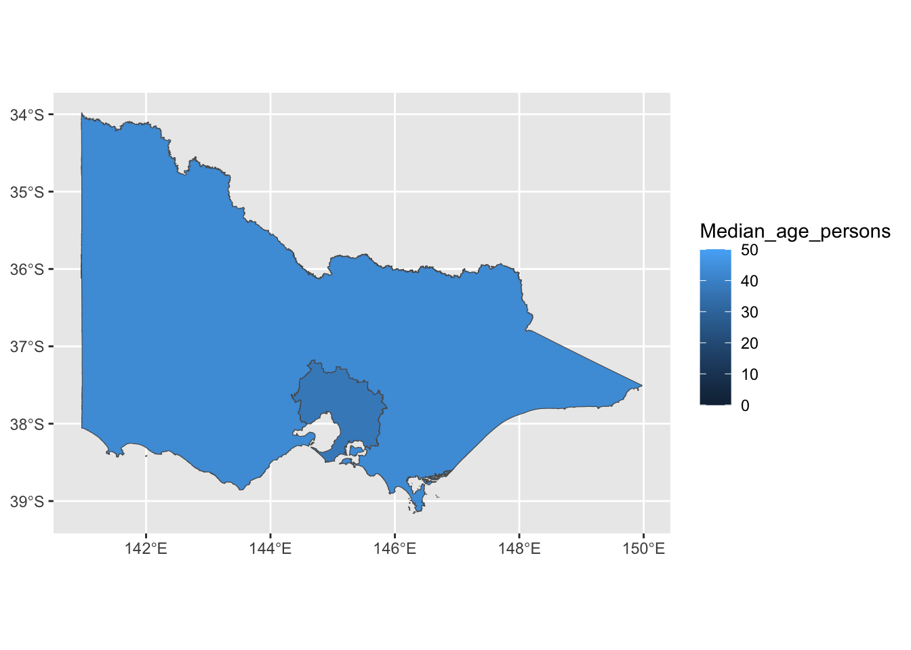
nrow(vicmap_gccsa_G02)[1] 4Section of State (SOS)
- Major urban, other urban, bounded locally & rural balance
vicmap_sos_G02 <- read_sf(geopath_2021_G02, layer = "G02_SOS_2021_VIC")
ggplot(vicmap_sos_G02) +
geom_sf(aes(geometry = geom, fill = Median_age_persons))nrow(vicmap_sos_G02)[1] 6Remoteness Areas (RA)
vicmap_ra_G02 <- read_sf(geopath_2021_G02, layer = "G02_RA_2021_VIC")
ggplot(vicmap_ra_G02) +
geom_sf(aes(geometry = geom, fill = Median_age_persons))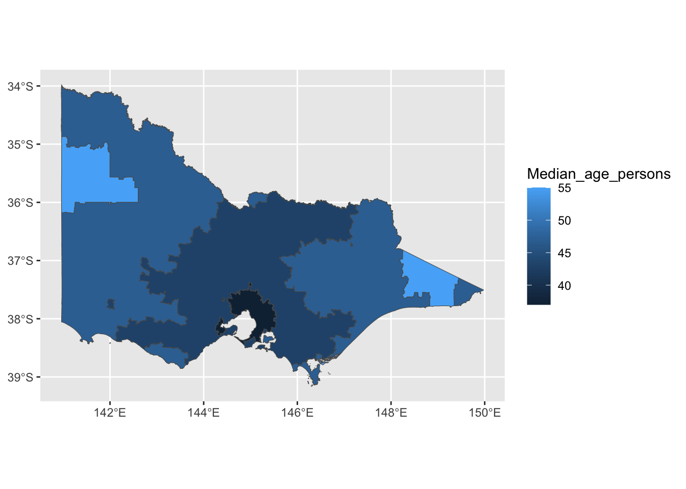
nrow(vicmap_ra_G02)[1] 6Section of State Ranges (SOSR)
vicmap_sosr_G02 <- read_sf(geopath_2021_G02, layer = "G02_SOSR_2021_VIC")
ggplot(vicmap_sosr_G02) +
geom_sf(aes(geometry = geom, fill = Median_age_persons))nrow(vicmap_sosr_G02)[1] 12Statistical Area Level 4 (SA4)
- Each region with population of 100,000 - 500,000
vicmap_sa4_G02 <- read_sf(geopath_2021_G02, layer = "G02_SA4_2021_VIC")
ggplot(vicmap_sa4_G02) +
geom_sf(aes(geometry = geom, fill = Median_age_persons))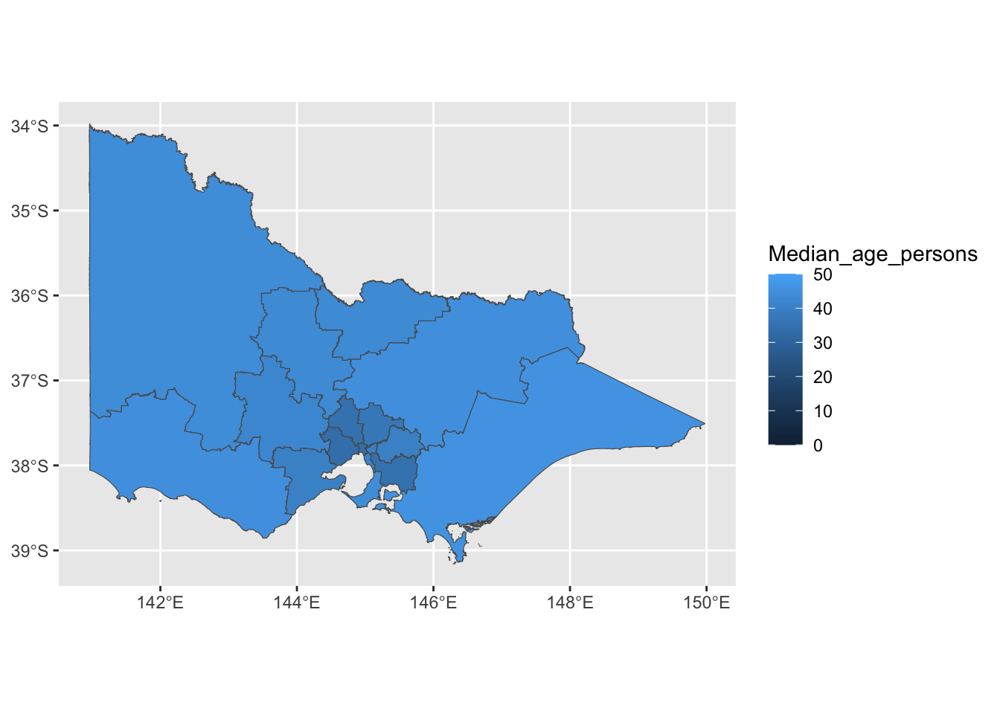
nrow(vicmap_sa4_G02)[1] 19Significant Urban Areas (SUA)
vicmap_sua_G02 <- read_sf(geopath_2021_G02, layer = "G02_SUA_2021_VIC")
ggplot(vicmap_sua_G02) +
geom_sf(aes(geometry = geom, fill = Median_age_persons))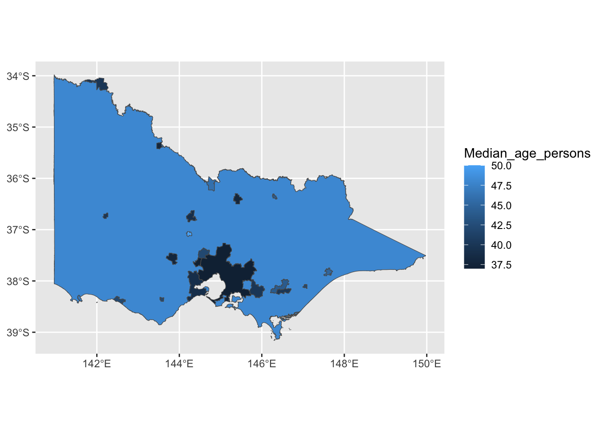
nrow(vicmap_sua_G02)[1] 22Commonwealth Electoral Division (CED)
vicmap_ced_G02 <- read_sf(geopath_2021_G02, layer = "G02_CED_2021_VIC")
ggplot(vicmap_ced_G02) +
geom_sf(aes(geometry = geom, fill = Median_age_persons))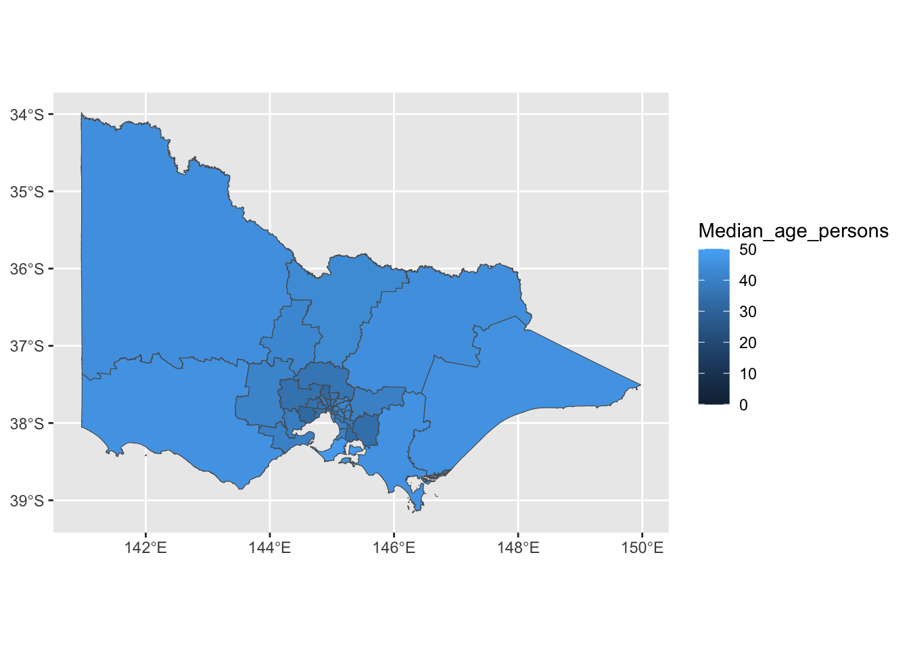
nrow(vicmap_ced_G02)[1] 41Statistical Area Level 3 (SA3)
- Each region with population of 30,000 - 130,000
vicmap_sa3_G02 <- read_sf(geopath_2021_G02, layer = "G02_SA3_2021_VIC")
ggplot(vicmap_sa3_G02) +
geom_sf(aes(geometry = geom, fill = Median_age_persons))
nrow(vicmap_sa3_G02)[1] 68Local Government Area (LGA)
vicmap_lga_G02 <- read_sf(geopath_2021_G02, layer = "G02_SA3_2021_VIC")
ggplot(vicmap_lga_G02) +
geom_sf(aes(geometry = geom, fill = Median_age_persons))
nrow(vicmap_lga_G02)[1] 68State Electoral Division (SED)
vicmap_sed_G02 <- read_sf(geopath_2021_G02, layer = "G02_SED_2021_VIC")
ggplot(vicmap_sed_G02) +
geom_sf(aes(geometry = geom, fill = Median_age_persons))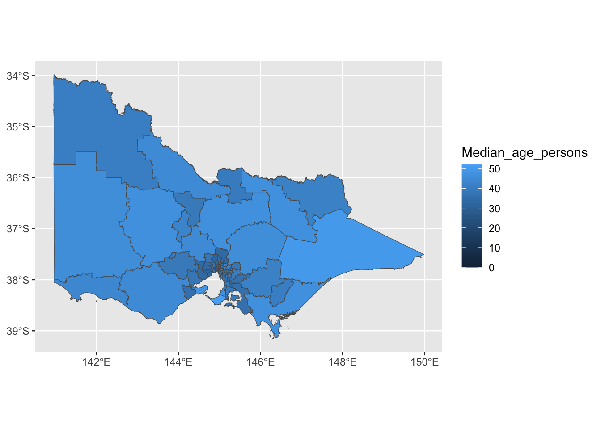
nrow(vicmap_sed_G02)[1] 90Urban Centres and Localities (UCL)
vicmap_ucl_G02 <- read_sf(geopath_2021_G02, layer = "G02_UCL_2021_VIC")
ggplot(vicmap_ucl_G02) +
geom_sf(aes(geometry = geom, fill = Median_age_persons))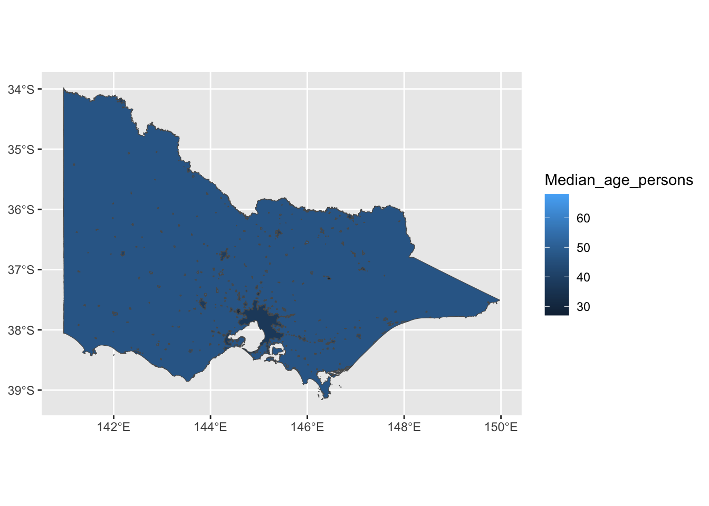
nrow(vicmap_ucl_G02)[1] 347Statistical Area Level 2 (SA2)
- Each region with populations in the range of 3,000-25,000
vicmap_sa2_G02 <- read_sf(geopath_2021_G02, layer = "G02_SA3_2021_VIC")
ggplot(vicmap_sa2_G02) +
geom_sf(aes(geometry = geom, fill = Median_age_persons))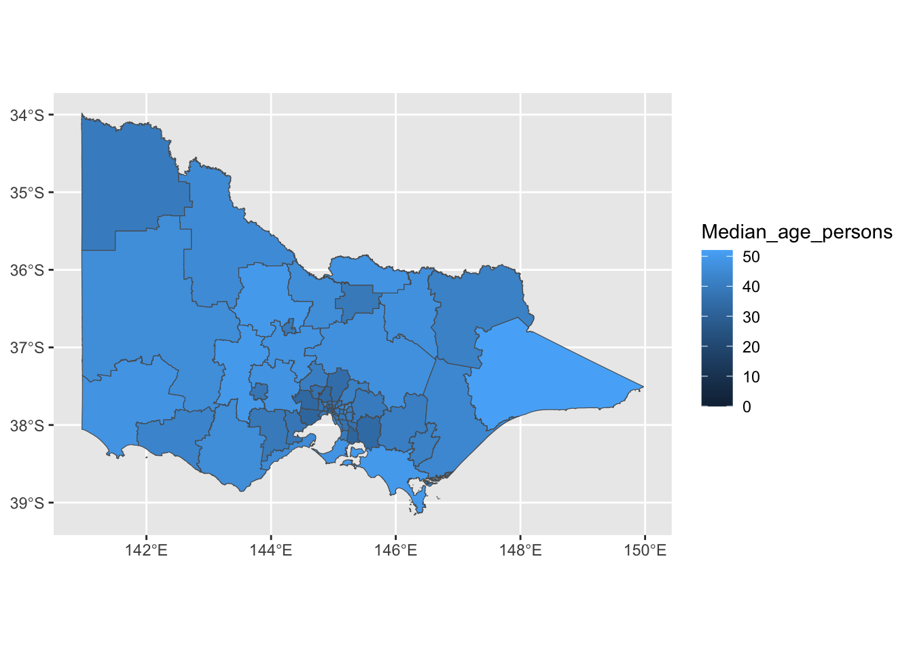
nrow(vicmap_sa2_G02)[1] 68Postal Areas (POA)
vicmap_poa_G02 <- read_sf(geopath_2021_G02, layer = "G02_POA_2021_VIC")
ggplot(vicmap_poa_G02) +
geom_sf(aes(geometry = geom, fill = Median_age_persons))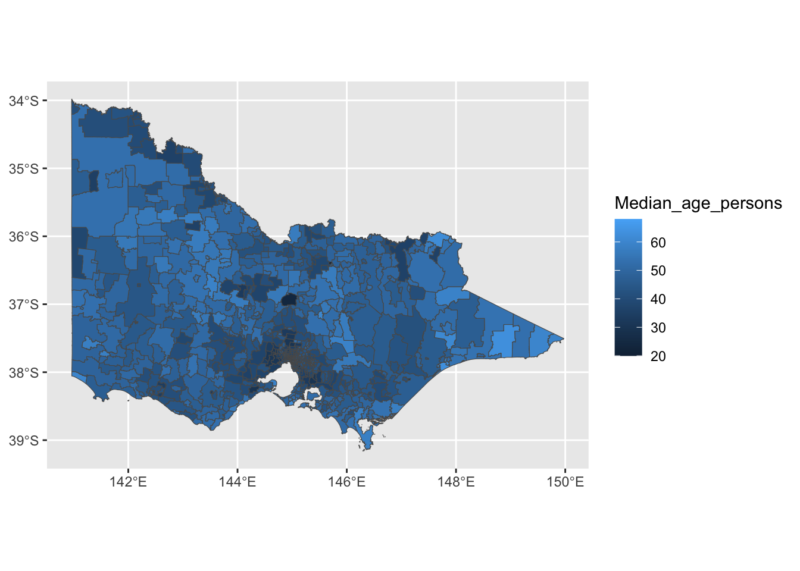
nrow(vicmap_poa_G02)[1] 694State Area Localitites (SAL) (Formerly SSC)
vicmap_sal_G02 <- read_sf(geopath_2021_G02, layer = "G02_SAL_2021_VIC")
ggplot(vicmap_sal_G02) +
geom_sf(aes(geometry = geom, fill = Median_age_persons))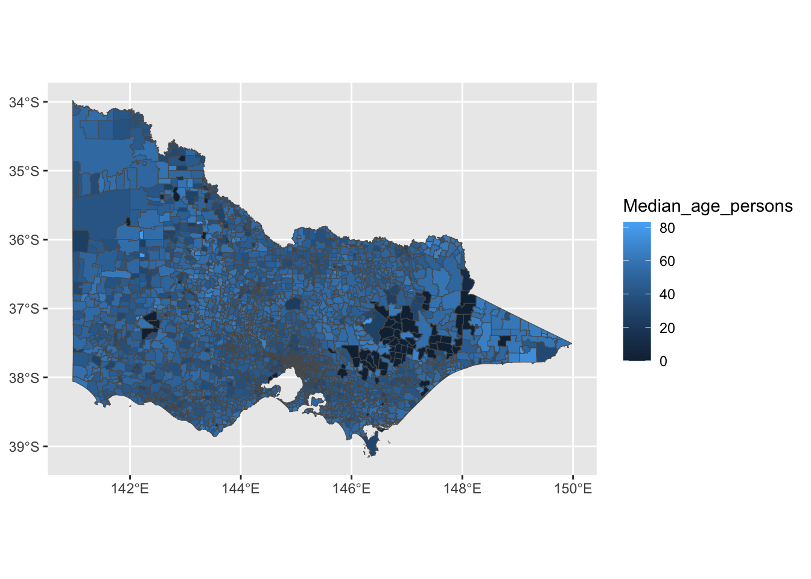
nrow(vicmap_sal_G02)[1] 2946Statistical Area Level 1 (SA1)
- Each region with a population of range 200-800
vicmap_sa1_G02 <- read_sf(geopath_2021_G02, layer = "G02_SA1_2021_VIC")
ggplot(vicmap_sa1_G02) +
geom_sf(aes(geometry = geom, fill = Median_age_persons))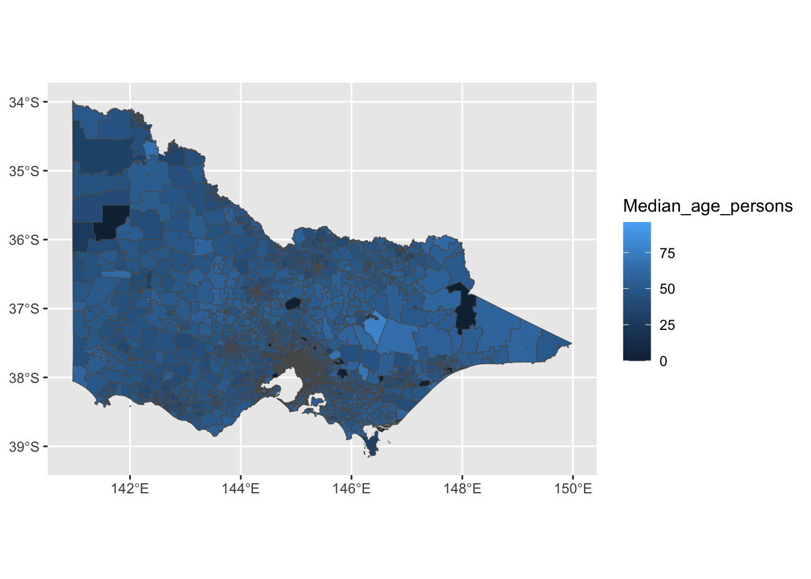
nrow(vicmap_sa1_G02)[1] 15482Electorate boundary
vs
Census boundary
Comparing SED 2021 and electorates divisions 2022
ggplot() +
geom_sf(data = vicmap_sed_G02,
aes(geometry = geom, fill = Median_age_persons),
alpha = 1, color = "white", size = 2) +
geom_sf(data = winners_with_map, aes(geometry = geometry),
fill = "transparent", color = "red", size = 2) +
coord_sf(xlim = c(144.95, 145.24), ylim = c(-38.05, -37.85)) +
theme_bw()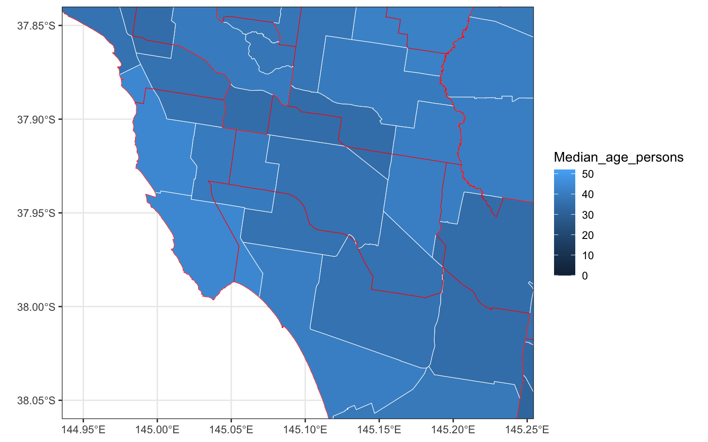
Closer look: Hotham electorate 1
electorate <- winners_with_map |>
filter(DivisionNm == "HOTHAM")
# Set projection to GDA1994 using EPSG:4283
st_crs(electorate$geometry,4283)
# Transform projection from GDA1994 to GDA2020 using EPSG:7844
electorate$geometry = st_transform(electorate$geometry, 7844)
sed_intersect <- vicmap_sed_G02 |>
filter(st_intersects(geom,
electorate$geometry,
sparse = FALSE
)[, 1])
ggplot() +
geom_sf(data = sed_intersect,
aes(geometry = geom), color = "red", fill = "transparent") +
geom_sf_text(data = sed_intersect,
aes(label = SED_CODE_2021, geometry = geom), color = "red") +
geom_sf(data = electorate, aes(geometry = geometry), fill = "transparent") +
geom_sf_text(data = electorate, aes(geometry = geometry, label = DivisionNm))Closer look: Hotham electorate 1
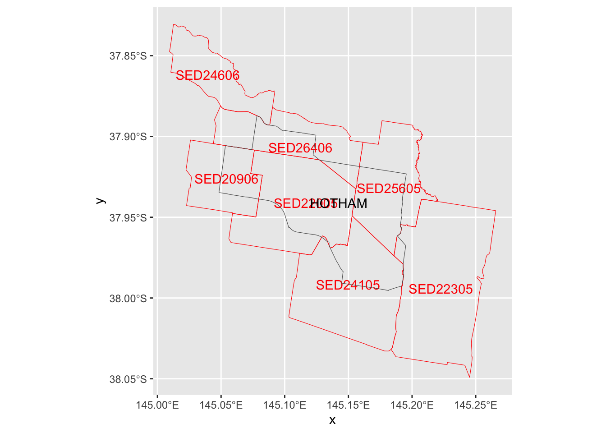
Closer look: Hotham electorate 2
sed_intersect2 <- sed_intersect |> #<<
mutate(
geometry = st_intersection(geom, electorate$geometry), #<<
perc_area = 100 * st_area(geometry) / st_area(geom), #<<
perc_area = as.numeric(perc_area)
) |> #<<
filter(perc_area > 5)
ggplot(sed_intersect2, aes(geometry = geometry)) +
geom_sf(data = electorate) +
geom_sf_text(
data = electorate,
aes(label = DivisionNm)
) +
geom_sf(color = "red", aes(fill = Median_age_persons)) +
geom_sf_text(
aes(
label = glue::glue("{SED_CODE_2021}
({scales::comma(perc_area, 1)}%, {Median_age_persons})")
),
color = "red"
) +
theme(legend.position = "bottom")Closer look: Hotham electorate 2

Closer look: Hotham electorate 3
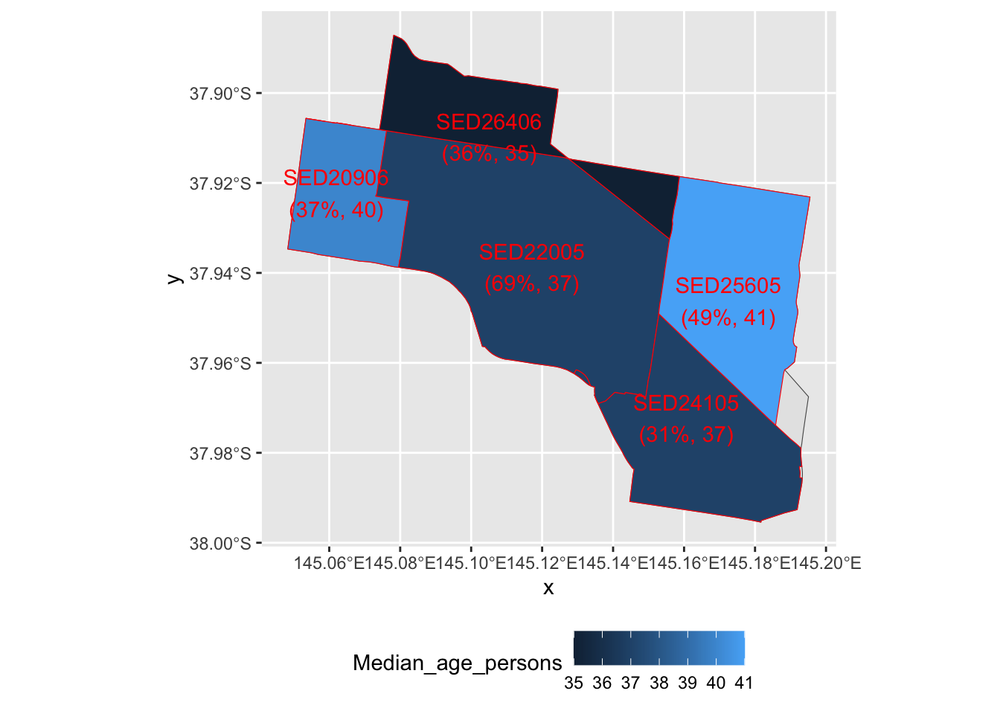
Strategy 1
sort(sed_intersect2$Median_age_persons)[1] 35 37 37 40 41Strategy 2
mean(sed_intersect2$Median_age_persons)[1] 38Strategy 3
weighted.mean(
sed_intersect2$Median_age_persons,
sed_intersect2$perc_area
)[1] 38.06118Closer look: Hotham electorate 4
sa1_intersect <- vicmap_sa1_G02 %>% #<<
filter(st_intersects(geom,
electorate$geometry,
sparse = FALSE
)[, 1])
sa1_intersect2 <- sa1_intersect %>%
mutate(
geometry = st_intersection(geom, electorate$geometry),
perc_area = 100 * st_area(geometry) / st_area(geom),
perc_area = as.numeric(perc_area)
) %>% #<<
filter(perc_area > 5)
ggplot(sa1_intersect) +
geom_sf(color = "red",
aes( fill = Median_age_persons, geometry = geom)) +
geom_sf(data = electorate,
color = "white", size = 2, fill = "transparent",
aes(geometry = geometry)) +
theme(legend.position = "bottom")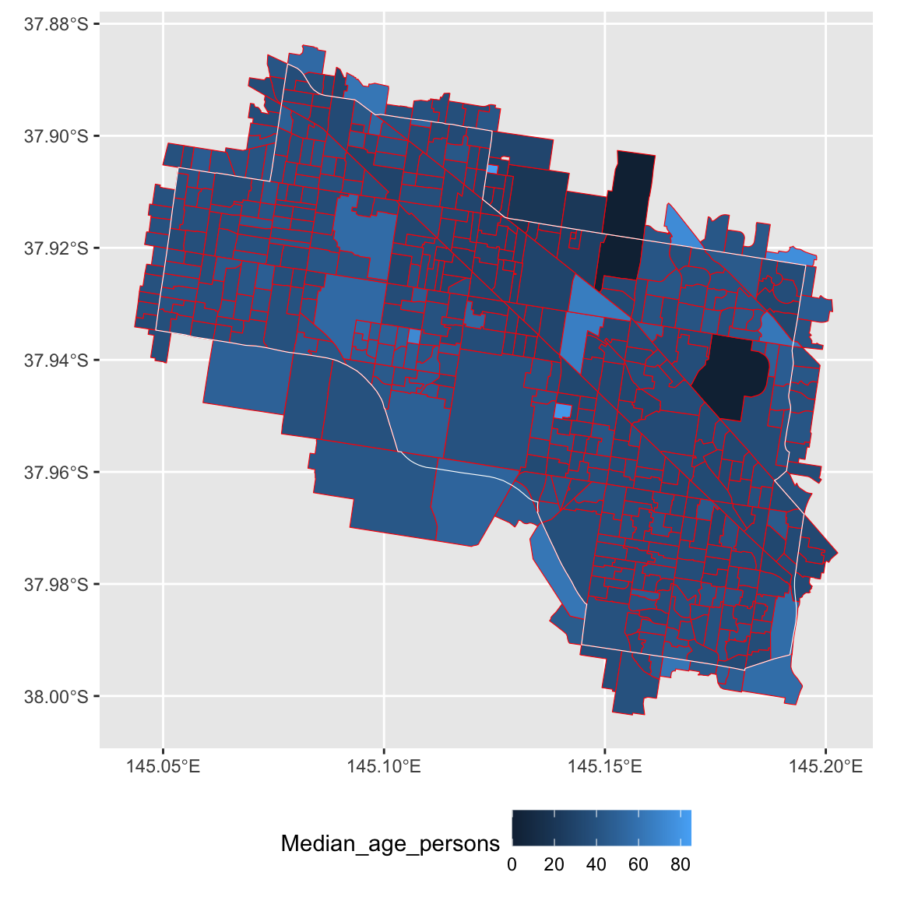
Closer look: Hotham electorate 5
Strategy 1
fivenum(sa1_intersect2$Median_age_persons)[1] 0 35 38 41 81Strategy 2
mean(sa1_intersect2$Median_age_persons)[1] 38.07674Strategy 3
weighted.mean(sa1_intersect2$Median_age_persons, sa1_intersect2$perc_area)[1] 38.02792Closer look: Hotham electorate 5
Strategy 4
ggplot(sa1_intersect2, aes(x = Median_age_persons)) +
geom_histogram(binwidth = 1)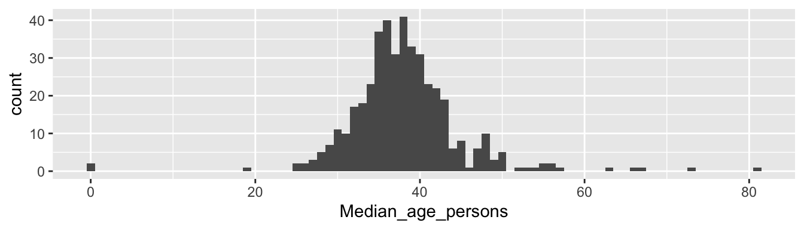
Closer look️: Zero median age
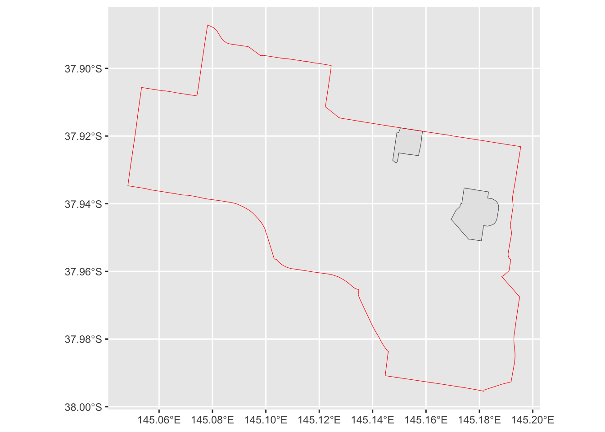
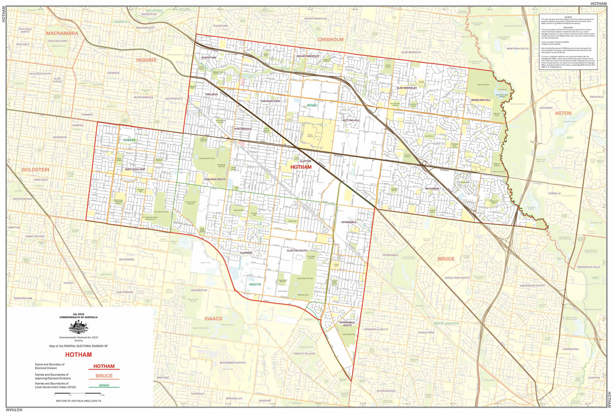
BEFORE (No Filter)
Strategy 1
fivenum(sa1_intersect2$Median_age_persons)[1] 0 35 38 41 81Strategy 2
mean(sa1_intersect2$Median_age_persons)[1] 38.07674Strategy 3
weighted.mean(sa1_intersect2$Median_age_persons, sa1_intersect2$perc_area)[1] 38.02792AFTER (With Filter)
sa1_intersect3 <- sa1_intersect2 %>%
filter(Median_age_persons != 0)Strategy 1
fivenum(sa1_intersect3$Median_age_persons)[1] 19 35 38 41 81Strategy 2
mean(sa1_intersect3$Median_age_persons)[1] 38.25467Strategy 3
weighted.mean(sa1_intersect3$Median_age_persons, sa1_intersect3$perc_area)[1] 38.20661Dorling Cartogram
sa1_intersect4 <- sa1_intersect %>%
mutate(centroid = st_centroid(geom))
dorling_plot <- ggplot(sa1_intersect4) +
geom_sf(
data = electorate,
aes(geometry = geometry), size = 4, fill = "grey60"
) +
geom_sf(aes(geometry = centroid, color = Median_age_persons),
size = 0.5, shape = 3
) +
scale_color_viridis_c(name = "Median age", option = "magma")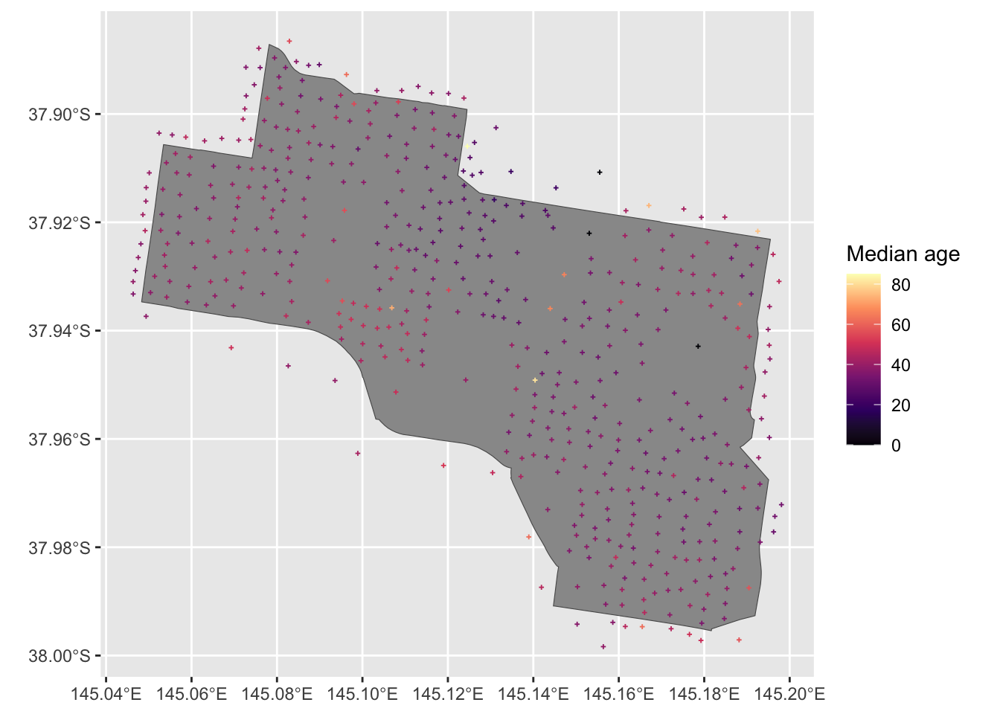
Closer look: Hotham electorate 7
Filter out zero age electorates
sa1_intersect5 <- sa1_intersect4 %>%
filter(st_intersects(centroid, electorate$geometry, sparse = FALSE)[, 1],
Median_age_persons != 0)Strategy 1
fivenum(sa1_intersect5$Median_age_persons)[1] 19 35 38 41 81Strategy 2
mean(sa1_intersect5$Median_age_persons)[1] 38.20706Strategy 4
ggplot(sa1_intersect5, aes(x = Median_age_persons)) +
geom_histogram(binwidth = 1)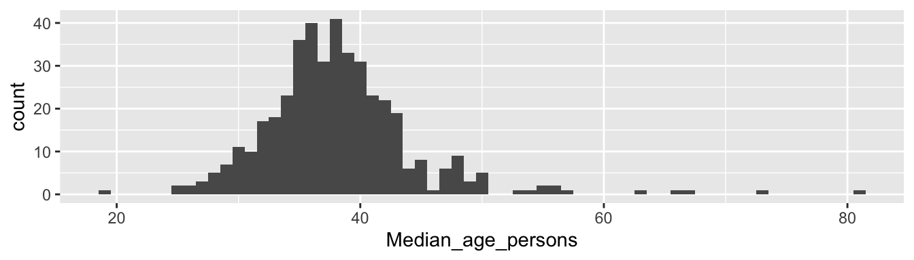
Wrap Up
Wrap Up
What did we learn
Learnt about geopackages and different census boundaries
We mapped the 2021 census boundaries and projected a summary of the census variable (i.e. median age) onto a 2022 electoral district
Found there are many approaches one can use to characterise an electorates demographics.
Estimates of median age of an electorate are more reliable using SA1 map data than SED map data.
Discovered some of the challenges with matching two different types of data! (Like zero age!)
For your assignment
Takeaways
Be very clear about which boundaries you choose for your assignment and why
Be sure to explain how you matched those boundaries - did you use area overlap, centroids, minimal area overlap criterion?
Was there anything odd you encountered when joining your data?
Did you need to handle any locations with no demographic data? Tell us.
Every year
CED regions are not the same as electoral boundaries!
They should be a close approximation, but they won’t necesasrily be exact. Better check on your assignment! Remember I want you to justify any decisions.
Comparing CED 2021 and electorates divisions 2022
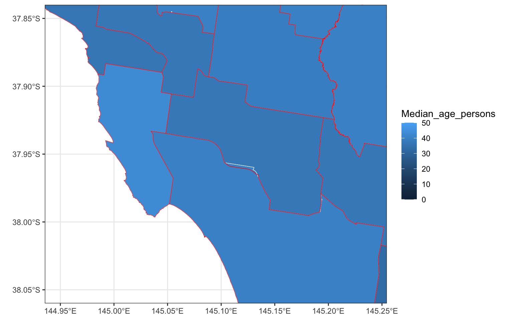
ggplot() +
geom_sf(data = vicmap_ced_G02,
aes(geometry = geom, fill = Median_age_persons),
alpha = 1, color = "white", size = 2) +
geom_sf(data = winners_with_map, aes(geometry = geometry),
fill = "transparent", color = "red", size = 2) +
coord_sf(xlim = c(144.95, 145.24), ylim = c(-38.05, -37.85)) +
theme_bw()